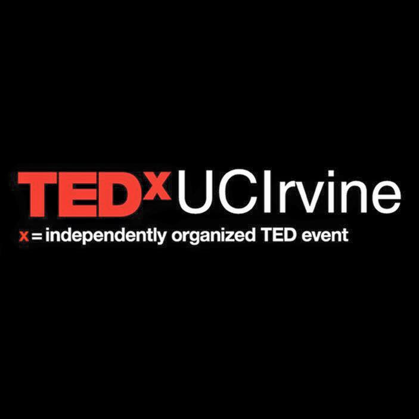

about me
To me, almost everything is an art. I grew up in a household where I passed the time with working with my hands: drawing, composing and performing music, writing, cooking, you name it. Even computer "science" feels like art to me, as there are ways to express my love for craft and perfection in its framework of code.
I'm attending University of California, Irvine as a computer science major. To be honest, it had been a journey to find computer science as the thing that I really wanted to do. I wanted to pursue biology and playing the French horn at first! But I'm more than grateful that I've fallen in love with the computing community.

work experience
tech
Currently I'm working in research in artificial intelligence with Alexander Ihler at UC Irvine, and I'm super excited! I am to develop a backtracking heuristic algorithm for the next two quarters of school.
During last spring I worked at Flint Rehabilitation, a local startup, as a software developer intern. I reskinned, animated, and updated the mechanics of an Android game. I also used Django to model and deploy a database for data-aggregation on Flint's customers.
Last summer (Summer 2016) I worked at MeridianLink, a finance software company, as a software engineering intern. I created a web app that can generate multi-paged web surveys and record survey answers in a SQL database. Exceeding the company's expectations, I added extra things such as filtering intelligently and material design to the UX/UI.
leadership
Right now I am an Explore ICS mentor with my university's Women in Information and Science (WICS) organization and a mentor to a handleful of other underclassmen. I also am a student representative of MeridianLink!
Most recently, I worked with HackUCI, my university's hackathon organization, in Spring 2016. I started out as a member in the marketing team, but I also took on many other responsibilities, such as setting up communication channels in Google Docs, instructing others on how to carry out event activities, and setting up a committee for surveying school demographics.
During my sophomore and junior years I worked at TEDxUCIrvine as a marketing and design director. I would say that during these years, I learned to overcome differing opinions and lead people effectively. A lot of my designs made it onto brochures and posters that hundreds across our UCI campus saw.
projects
Aside from the student organizations that I'm part of, I've worked on a couple of projects.
other stuff
As I mentioned above, I have a lot of hobbies. From time to time I draw or compose music, but it mostly goes toward my projects or doodles that I don't invest a whole lot of time into. Here are a couple of visual pieces I enjoyed making.
Github
 HackerRank
HackerRank
You can also contact me at kgbui@uci.edu.
Resume